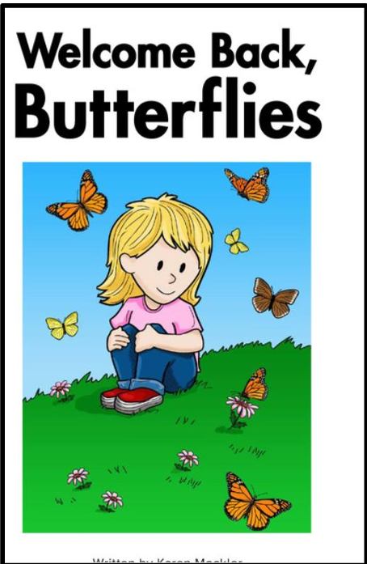
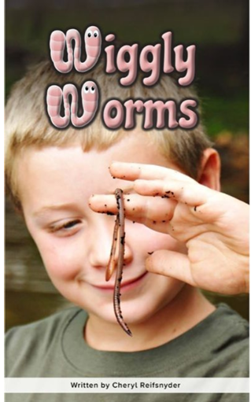
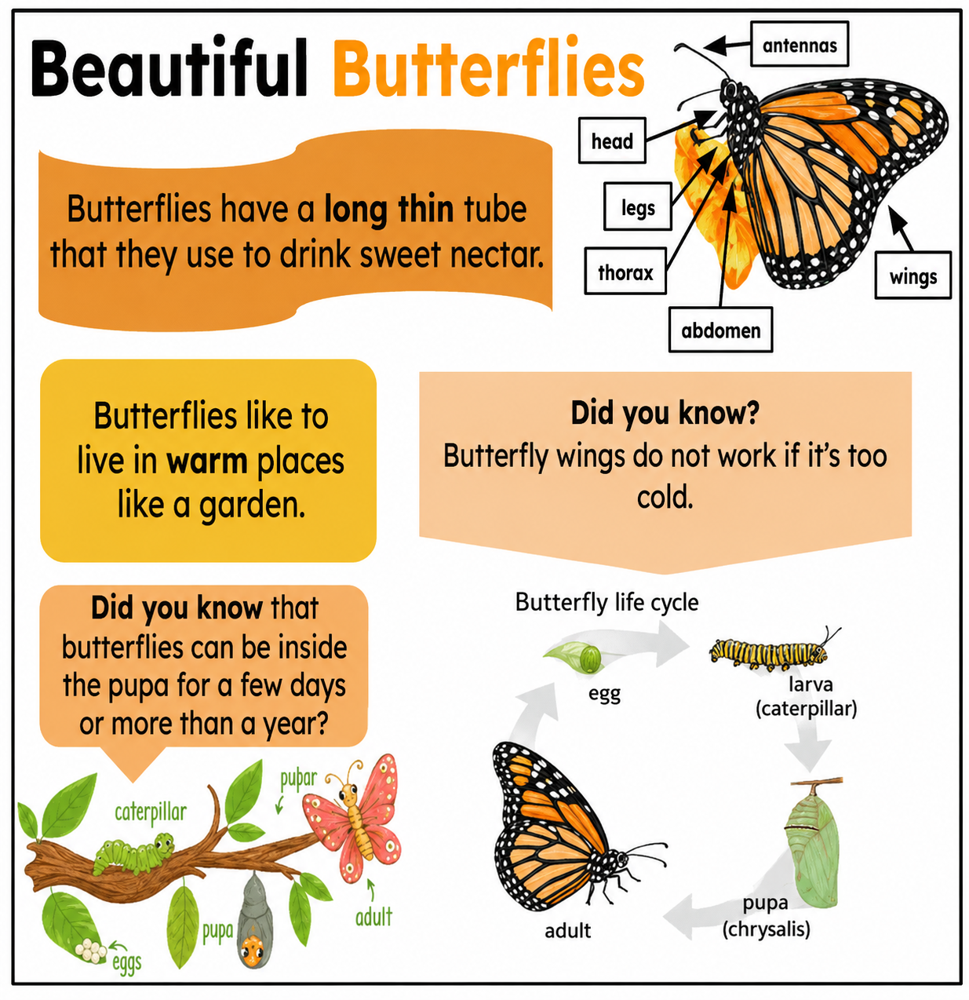

Part B: Reading and Writing (17 18 週報推薦書籍)
Welcome Back, Butterflies!
I love butterflies. I love the orange and black ones. In the fall, they fly south. They fly away from me. In the spring, they fly north. They fly back to me. They fly back to lay their eggs. They need the right plants for their eggs. I plant seeds in my yard. I water the seeds. I watch the seeds sprout. I watch the plants grow. My yard has the right plants now. Welcome back, butterflies!
我喜歡蝴蝶。我喜歡橘色和黑色的那些。到了秋天，牠們會往南飛，飛離我。到了春天，牠們會往北飛，再飛回來。牠們飛回來是為了產卵。牠們需要適合產卵的植物。我在院子裡種下種子，也幫種子澆水。我看著種子發芽，看著植物長大。現在我的院子裡已經有適合的植物了。歡迎回來，蝴蝶們！

1. What do the butterflies look like?
蝴蝶看起來是什麼樣子？
2. When do the butterflies fly away?
蝴蝶什麼時候飛走？
3. Why do you think the butterflies fly back?
你覺得蝴蝶為什麼會飛回來？
Earthworms Help Plants Grow
Earthworms are small animals. They build long tunnels underground. The tunnels help water and air reach plant roots. Earthworms make space in the soil. Earthworm waste helps plants grow big and strong. Earthworms are small, but they have a big job.
蚯蚓是小動物。牠們會在地下挖長長的通道。這些通道能幫助水和空氣到達植物的根部。蚯蚓會在土壤中製造空間。蚯蚓的排泄物也能幫助植物長得又高又壯。蚯蚓雖然小，卻有很重要的工作。

1. What do earthworms build underground?
蚯蚓在地下建造什麼？
2. What do earthworm tunnels help reach plant roots?
蚯蚓的通道幫助什麼到達植物根部？
3. Do you think earthworms are good for plants? Why?
你覺得蚯蚓對植物有幫助嗎？為什麼？
Earthworm Bodies
The body of an earthworm is made up of many parts. Each part is shaped like a ring. Each part can bend and stretch. Earthworms move by stretching and pulling their bodies.
蚯蚓的身體是由很多部分組成的。每一部分都像一個圓環。每一部分都可以彎曲和伸展。蚯蚓靠著伸長和拉動身體來移動。
1. What is the body of an earthworm made up of?
蚯蚓的身體是由什麼組成的？
2. What is each part shaped like?
每一部分的形狀像什麼？
3. How do earthworms move?
蚯蚓怎麼移動？
Part C: Chinese to English
1. 我不吃糖果。
2. 他想要蘋果。
3. 她不想要牛奶。
4. 我不游泳。
5. 我不喜歡牛奶。
6. 我不踢足球。
7. 他喜歡糖果。
8. 他吃蘋果。
9. 她不吃蛋糕。
10. 她不打棒球。
Part D: 照海報內容，寫出海報主題的事實。注意單字拼字抄寫。每個句子的第一個字母要大寫，句尾要加句號。

Butterflies have a long thin tube that they use to drink sweet nectar.
蝴蝶有一條又長又細的管子，牠們用它來吸甜甜的花蜜。
Butterflies like to live in warm places like a garden.
蝴蝶喜歡住在像花園那樣溫暖的地方。
Butterfly wings do not work if it is too cold.
如果天氣太冷，蝴蝶的翅膀就不能正常活動。
Butterflies can be inside the pupa for a few days or more than a year.
蝴蝶可能在蛹裡待幾天，也可能超過一年。